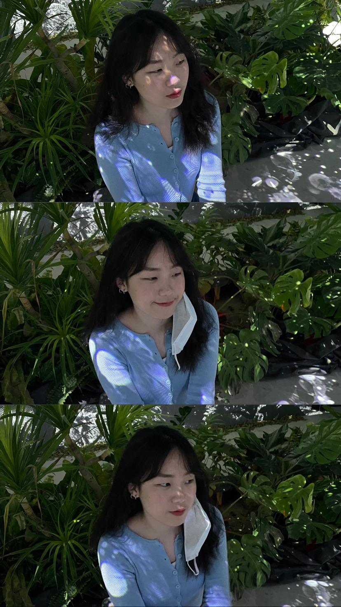

個性方面，我認為自己是一個感性、成熟、慢熱、懶惰、就事論事、不善於表達情感的人，每到一個新的環境，認識新朋友對我來說並不難，但要跟那麼多人很好，是一件很困難的事，甚至有時候是自己的問題，好像是我把門檻設定的太高、太難，使我逐漸認為身邊沒有多少好朋友。此外，從小到大我都是一個愛哭的小孩，一部感動的電影能哭好幾次，是戲裡有人哭我就會想哭的程度，即便自己明明不想哭，淚腺仍能分泌出一堆眼淚出來，是連我都無法控制的地步。從高中開始，聽到周遭好友認為我思想成熟、就事論事的說法，覺得自己在就讀高中時的心態、想法轉變很大，也不知道是因為甚麼才有那麼大的變化，現在有些想法就像老人一樣隨遇而安，不多強求甚麼，當然還有些部分是符合現在年齡的，但與同齡層相較之下，確實成熟了那麼一點。而我就事論事、公私分明也是在高中時期發現的，或許與當時擔任社團幹部有關，凡事不能都帶感情去處理，適當的公私分明能讓整件事更加順利許多。最後，我真的是一個很懶惰的人，我認為家是讓我放鬆休息的地方，因此每當我回到家，能不講話就不講，或是只講短短的幾個字，盡可能地減少說話的頻率，家事我也不常做，一到家就只想休息，什麼都不做的感覺真的很棒。
